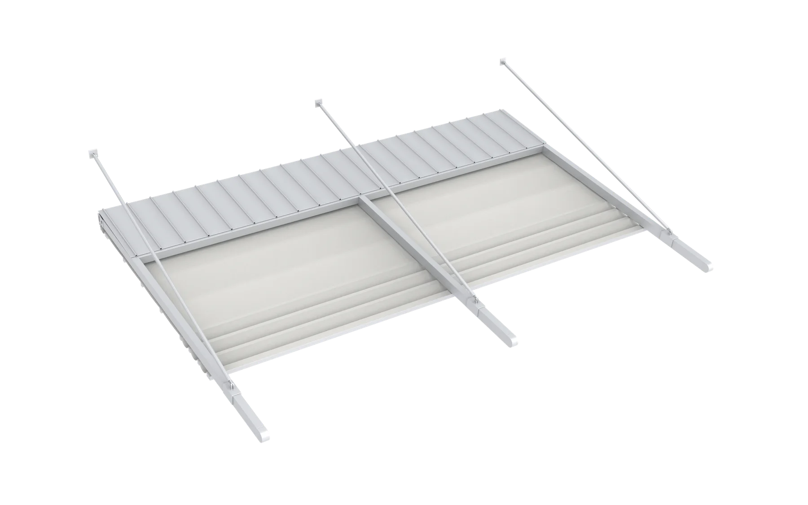
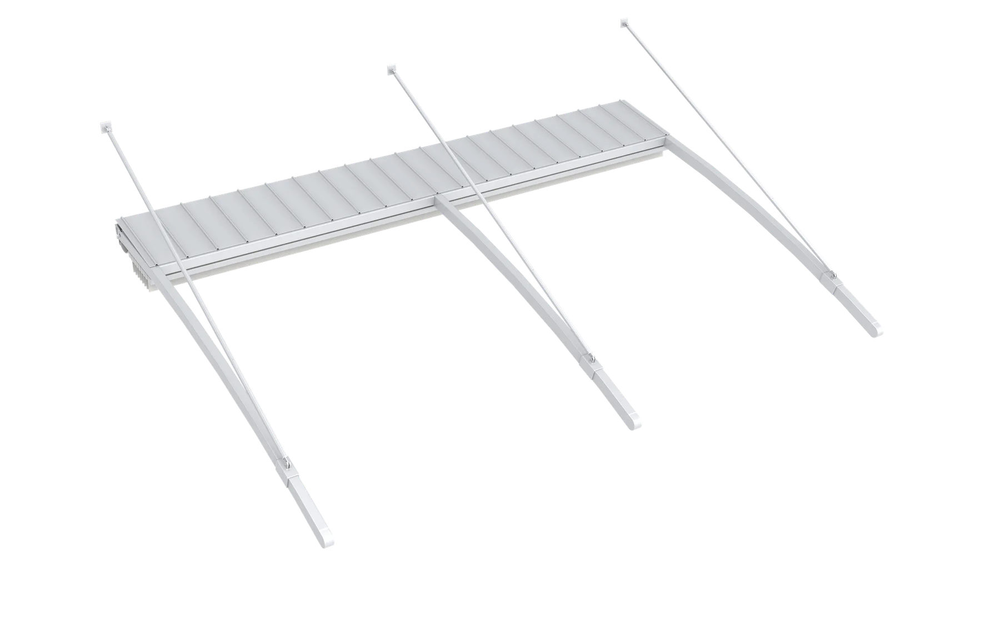
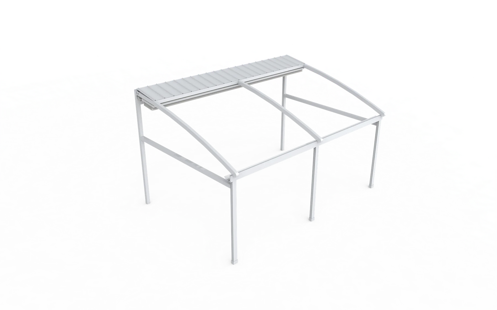
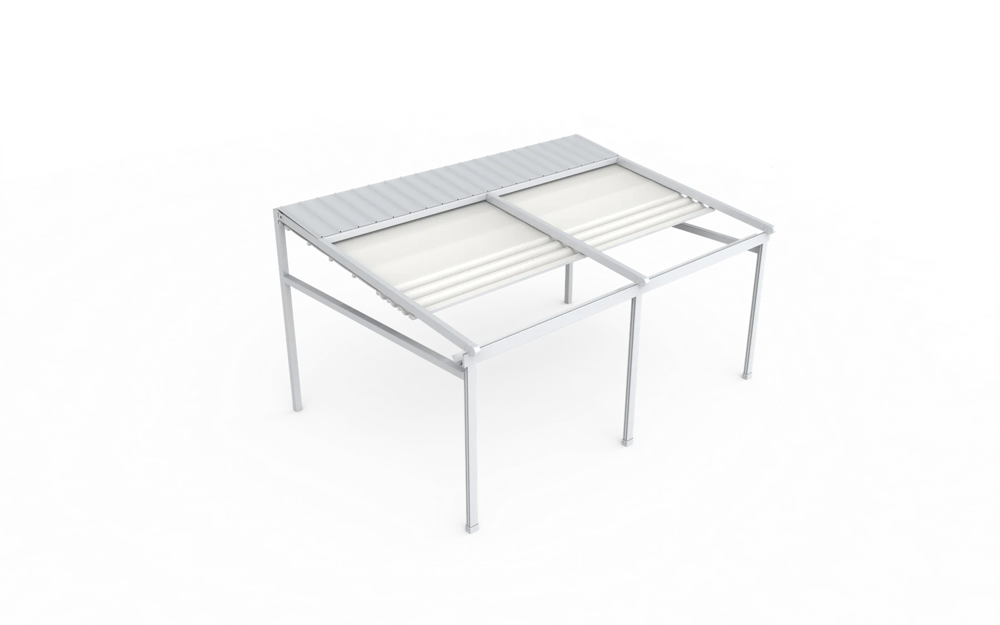
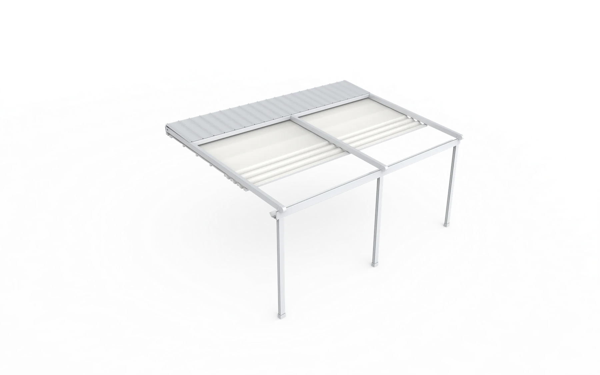
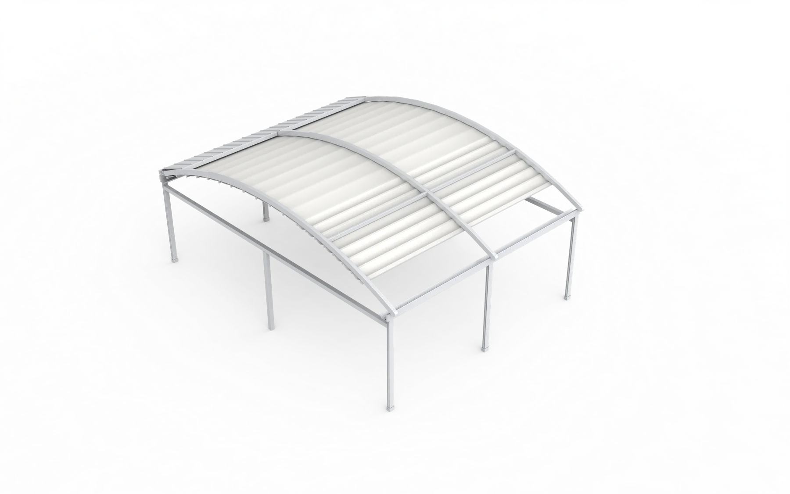
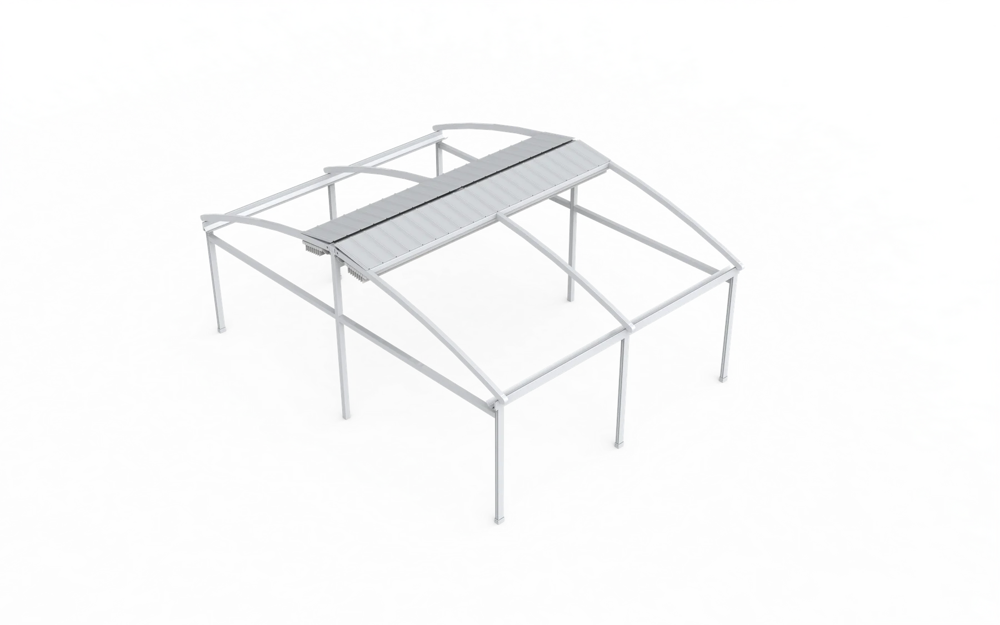
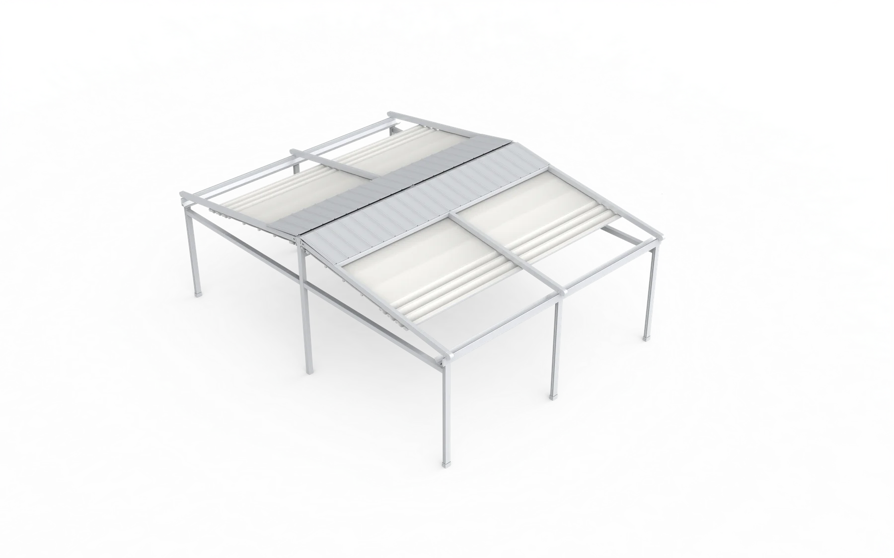
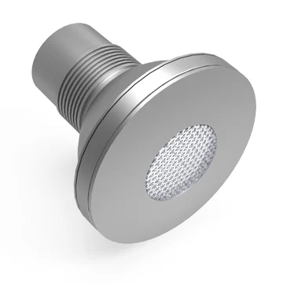
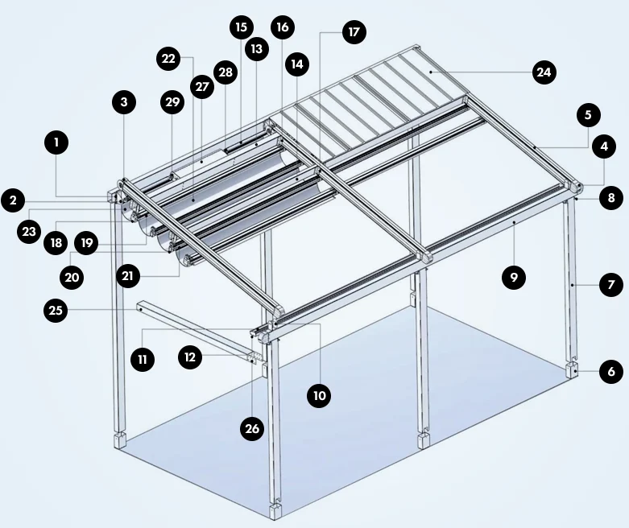

01
스케이프어닝
SCAPE
AWNING
아름다운 경관과
편리한 채광을 위한
스케이프 어닝 시스템
- 최대 13m, 돌출 10m의 넓은 면적
- 전동모터, 원격제어로 편리한 사용
- 방염, 방수, 오염에 강한 프랑스 Serge Ferrari, 터키 3DM원단
- 외부공간의 활용도 극대화
캔틸레버형 전동 어닝은 재래시장, 일반상가, 어린이집, 놀이공원, 전원주택, 타운하우스 등에 차양 및 비가림을 목적으로 설치되며, 천장개폐형 오픈 어닝은 골프장, 수영장, 레스토랑, 커피숍, 백화점 등 상업시설의 휴게공간으로 다양한 장소에 폭넓게 활용됩니다.
02
전동 어닝 시스템 타입

01
A-TYPE

02
R-TYPE 01

03
F-TYPE

04
E-TYPE

05
L-TYPE

06
D-TYPE

07
P-TYPE

08
X-TYPE
※ 현장 여건에 따라 골조, 독립기초가 추가될 수 있음
03
사용원단
Serge FerrariClassic 602 / 602 Opaque
3DM
| 재질 | 1100 dtex 고강도폴리에스테르, PVC602N불투명흰색(암막) | 1100 DTX / DIN |
|---|---|---|
| 두께·중량 | 0.56mm ± 10 %, 750g/m2(암막) | 0.56mm ± 10 % / 850 g/m² |
| 적정 사용온도 | -30℃, +70℃ | -30℃, +70℃ |
| 인장강도 경사/위사 | 230/220 daN/5CM | 230/220 daN/5CM |
|---|---|---|
| 인열강도 경사/위사 | 20/20 daN | 26/26 daN |
| 변색내성 | — | 6+ (BS EN ISO 105-B02:1999) |
| 방염성능/기준 | M2/NFP 92-507, Method 2/NFPA701 , B1/DIN 4102-1, M2/UNE 23.727.90, 1530.3/AS NZS | — |
| 특허기술 | 프리콘트렌트 기술 Precontraint | — |
|---|---|---|
| 특징 | 태양에너지의 효과적인 반사 흡수 및 전도 / 높은 제조 품질 및 직조 밀도 색상의 지속성 | — |
| 재활용 | 자체공장 Texyloop에서 Recycling가능 | — |
| 인증시스템 | 생산관리(ISO 9001 / ISO14001) | — |
| 색상·패턴 |
Translucent (투광)
Opaque (암막)
|
|
|---|

04
모터
순수국내기술로 개발 및 생산되는 모터로 기존 차양막에 사용되던 수입모터 대비 힘과 내구성이 우수하며,수입과정에서 필연적으로 발생하게 되는 부품유통 및 A/S의 문제를 해결한 우수한 제품을 사용하고 있습니다.
ddm45b 50 220V / 60Hz
- 토크(N.m)
- 50
- 속도(rpm)
- 13
- 튜브지름(mm)
- 45
- 정격파워(W)
- 215
- 정격전류(A)
- 1.03
- 지속시간(min)
- 4
- 보호율(IP)
- IP44
- 최대회전수(turn)
ddm45b 60 220V / 60Hz
- 토크(N.m)
- 60
- 속도(rpm)
- 11
- 튜브지름(mm)
- 59
- 정격파워(W)
- 390
- 정격전류(A)
- 1.77
- 지속시간(min)
- 4
- 보호율(IP)
- IP44
- 최대회전수(turn)
ddm45b 100 220V / 60Hz
- 토크(N.m)
- 100
- 속도(rpm)
- 11
- 튜브지름(mm)
- 59
- 정격파워(W)
- 390
- 정격전류(A)
- 1.77
- 지속시간(min)
- 4
- 보호율(IP)
- IP44
- 최대회전수(turn)
05
LED
어닝의 원단바 부분에 일정 간격(1M 이내)으로 삽입되어 설치되는 LED조명은 야간에 시인성을 확보하고, 동시에 아름다운 야간경관을 연출합니다.

※ 제원표
| Power | 3W |
|---|---|
| Led | Cree Chip |
| cct | Nature White(4000K) |
| Voltage | DC 12V |
| Body | Silver |
| Beam Angel | 60D |
| Size | ∅35XH34 mm, Cut : ∅30mm |
| IP Rate | IP62 |
06
스케이프어닝 구성 부품

01 / 29
벽 브라켓
wall bracket
도면의 번호 또는 아래 번호를 선택해 확인하세요.